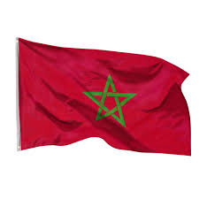
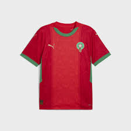
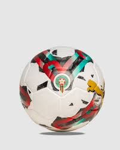

⚽Présentation du projet
Nom du projet : Shop Football Objectif : Créer une boutique en ligne dédiée à la vente d’articles de football (maillots, chaussures, accessoires, équipements d’entraînement, etc.) Public cible : passionnés de football, clubs, écoles de foot, particuliers. Langues : Français (et possibilité d’ajouter l’arabe ou l’anglais plus tard). Budget estimé : [à définir] Date de lancement souhaitée : [à définir]
🧍♂️ Espace utilisateur
L’espace utilisateur de Shop Football permet à chaque membre de gérer facilement ses informations personnelles, ses commandes et ses préférences. La fiche affiche la photo, le nom, l’e-mail et le statut de l’utilisateur dans un design clair et moderne. Un bouton “Modifier le profil” facilite la mise à jour des données. Cet espace vise à offrir une expérience simple, rapide et sécurisée à tous les passionnés de football. ⚽
🏠 Page d’accueil
Bienvenue sur Shop Football, la boutique en ligne dédiée à tous les passionnés du ballon rond ⚽. Nous proposons une large gamme d’articles de football : maillots, chaussures, accessoires et équipements d’entraînement pour joueurs, clubs et écoles de foot. Notre objectif est d’offrir une expérience d’achat simple, rapide et sécurisée, avec des produits de qualité et un design moderne adapté à tous les appareils.
🎯 Objectifs du site
Permettre aux utilisateurs d’acheter facilement des articles de football.
Offrir une expérience utilisateur fluide, moderne et sécurisée.
Mettre en avant les nouveautés, promotions et produits populaires.
Créer une image professionnelle et sportive de la marque.🛒 Boutique
Liste des produits (avec filtres : marque, taille, prix, équipe, etc.)
Fiche produit détaillée :
Images haute qualitéde
Prix
Description technique
Disponibilité en stock
Avis clients  